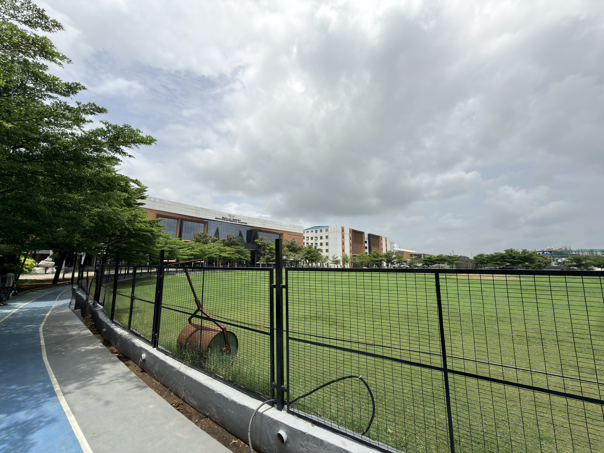

2026 – PRESENT
Malla Reddy Institute of Medical Sciences (MRIMS)
Bachelor of Medicine and Bachelor of Surgery (First-Year MBBS Student)
Pursuing foundational clinical and pre-clinical medical sciences with a focus on human anatomy, physiology, and evidence-based medical practice.

Campus View — Malla Reddy Institute of Medical Sciences